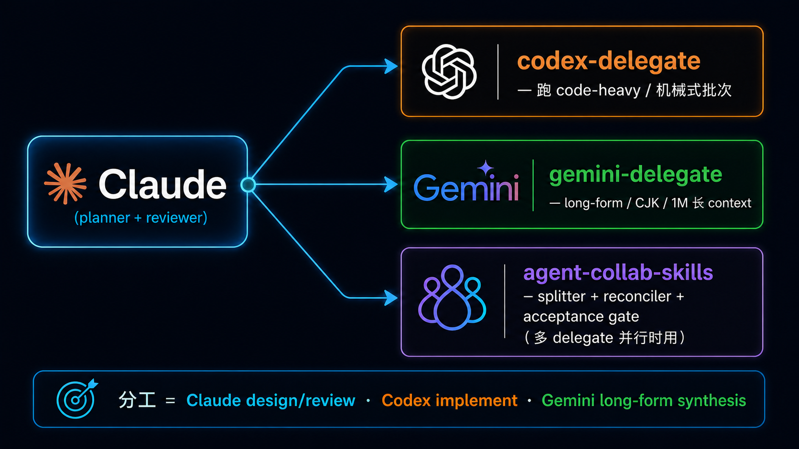

原课程本地核对资料，保留原内容与顺序。外链已改为本地阅读入口。命令中的原仓库路径请按本课运行指南换成实际位置；版本差异见本课说明。MIT © 2026 Wenyu Chiou。
MCP / Skills 集成目录
这是按需查找工具的分类目录，不是安装清单。先选一个官方起点；只有工作确实需要时，才展开一类。
📌 怎么使用这份目录
- 先说清楚你要读取数据，还是要写入真实服务。
- 优先选择官方 hosted / reference 入口，再检查维护、授权和权限。
- 先连接测试数据、read-only 和最小权限。write、send、delete 前保留人工批准。
完整安装与测试放在 Stage 5；这一页只帮你找到候选项目。
🧩 先分清五个词
- MCP Server：把数据或动作变成 MCP 工具的程序或 hosted service。
- Skill：可重复使用的指令、脚本、模板和参考资料；不同 host 的加载方式可能不同。
- Plugin：某个 host 的安装包，可以一起带入 Skill、命令、hook 或 MCP 设置；不是 MCP 规范本身。
- Remote MCP：由服务商运行的 MCP Server，通常用 OAuth 登录，不需要你在本机启动程序。
- Permission Boundary（权限边界）：Agent 真正能读、写、发送或删除的范围。工具能做，不代表每次都应该做。
📚 五个安全起点
| 起点 | 先学什么 | 编辑评分 |
|---|---|---|
| Official MCP Registry | 找已发布的 MCP Server；安装前仍要检查维护者、权限和来源 | ⭐⭐⭐⭐⭐ |
| servers | 看 MCP 功能如何实现；这是教学用 reference implementations，不等于 production 推荐 | ⭐⭐⭐⭐⭐ |
| Notion MCP | 看 hosted OAuth MCP 如何沿用用户 workspace 权限 | ⭐⭐⭐⭐⭐ |
| GitHub MCP Server | 通过官方实现了解 OAuth、工具组和 repository 权限 | ⭐⭐⭐⭐⭐ |
| skills | 看 Agent Skill 的文件夹、指令和资源如何组合 | ⭐⭐⭐⭐⭐ |
⚠️ MCP Server 可能碰到真实数据。即使来源是官方，也要确认登录账号、scope、可写工具与批准画面。
新增工具怎么选
新增项目核查：2026-10-15 UTC
| 需求 | 建议入口 | 编辑评分 | 先确认 |
|---|---|---|---|
| 查找、安装或更新 Agent Skills | Vercel Skills | ⭐⭐⭐⭐ | 它不是 MCP server 或模型；安装前检查来源、权限与 host 支持 |
目录
- 笔记 / 知识库
- 办公文件（Word / Excel / PowerPoint / PDF）
- Google Workspace
- Microsoft 365
- 开发协作（GitHub / Atlassian / Slack…）
- 数据库
- 浏览器自动化 / 网页抓取
- 设计（Figma / Excalidraw）
- 监控 / Observability
- 媒体 / 流媒体（YouTube / Spotify）
- 中文生态专用
- 其他常用（Cloudflare / Stripe…）
- 研究工作流 Skills（学术 / paper / 文献）
- Multi-LLM Delegation Skills
- 金融 / 交易 Agents
- 网页搜索 / 检索（Web Search / Retrieval）
- 安全 / MCP 安全治理
1. 笔记 / 知识库
展开第 1 类精选项目
Notion MCP ⭐⭐⭐⭐⭐
| 栏位 | 内容 |
|---|---|
| 提供方式 | Notion hosted remote MCP；OAuth |
| 推荐度 | ⭐⭐⭐⭐⭐（官方） |
教什么：Notion 官方 hosted MCP，可搜索、读取、创建和更新用户本来就能访问的内容。
适合谁：日常用 Notion 写笔记、管项目或维护 wiki，想从支持 MCP 的 client 操作 workspace 的人。
备注：用 OAuth 登录并沿用用户权限；写入前仍要看清批准画面。旧的开源 makenotion/notion-mcp-server 已不再积极维护，不作为新安装起点。
MarkusPfundstein/mcp-obsidian ⭐⭐⭐⭐
| 栏位 | 内容 |
|---|---|
| License | MIT |
| 推荐度 | ⭐⭐⭐⭐（社群维护） |
教什么：透过 Obsidian REST API community plugin 让 LLM 读写你的 Obsidian vault。 适合谁：Obsidian 重度用户，想用 Claude Code 整理 daily note、自动 link、跨文件搜索。 备注：要先在 Obsidian 装 Local REST API plugin。
PleasePrompto/notebooklm-skill ⭐⭐⭐⭐
状态（2026-09-10 UTC）：已归档，作者不再提供更新或支持。保留作历史学习范例；新流程不要从它开始。
| 栏位 | 内容 |
|---|---|
| License | MIT |
| 推荐度 | ⭐⭐⭐⭐ |
教什么：Claude Code Skill，用浏览器自动化操作 Gemini Notebook（旧名 NotebookLM）、查询上传文件，回复带 citation。
适合谁：想研究早期浏览器自动化 Skill 设计的人；实际使用请先看官方网页或下方仍需自行评估的 notebooklm-py。
备注：需要 Google 账号登录授权。
teng-lin/notebooklm-py ⭐⭐⭐⭐
| 栏位 | 内容 |
|---|---|
| License | MIT |
| 推荐度 | ⭐⭐⭐⭐ |
教什么：非官方 Gemini Notebook（旧名 NotebookLM）Python API + CLI + agentic skill；功能比上面 skill 多，包含一些 web UI 没开放的能力。 适合谁：要程序化批量操作 Gemini Notebook（旧名 NotebookLM）的人（例如自动建 notebook、批量导入文件）。 备注：非官方、Google 政策变动可能会坏；用前看一下 issue tracker。
ergut/mcp-logseq ⭐⭐⭐
| 栏位 | 内容 |
|---|---|
| License | MIT |
| 推荐度 | ⭐⭐⭐ |
教什么：透过 Logseq Local HTTP API 让 LLM 读写 Logseq graph。 适合谁：Logseq 用户要自动化 daily journal、跨页 link、查询 backlinks。 备注：需要 Logseq 开启 HTTP API（Settings → Features → HTTP API）。
skridlevsky/graphthulhu ⭐⭐⭐（已归档／历史范例）
| 栏位 | 内容 |
|---|---|
| License | 先前记录为 MIT；目前无法重新核对 |
| 推荐度 | ⭐⭐⭐（历史评分；目前无法公开获取） |
教什么：一组 tool，覆盖 navigation、search、analysis、writing、journals、flashcards、whiteboards。 适合谁：想研究早期 Logseq + Obsidian MCP 设计的人；新项目应改找仍在维护的替代方案。 备注（2026-09-10 UTC）：原 GitHub 入口返回 404，已移除失效链接。不推测它是删除、转为私有或迁移；此处只保留历史名称与评分，不再当作可获取的学习资源。
ankimcp/anki-mcp-server ⭐⭐⭐
| 栏位 | 内容 |
|---|---|
| License | MIT |
| 推荐度 | ⭐⭐⭐ |
教什么：透过 AnkiConnect 让 LLM 建卡、查卡、批改 deck。 适合谁：用 Anki 学语言 / 医学 / 法律的人——叫 LLM 从教材自动产卡。 备注：需要 Anki 桌面版装 AnkiConnect addon。
2. 办公文件（Word / Excel / PowerPoint / PDF）
展开第 2 类精选项目
anthropics/skills ⭐⭐⭐⭐⭐
| 栏位 | 内容 |
|---|---|
| License | 各 Skill 分别授权；许多为 Apache-2.0，docx／pdf／pptx／xlsx 为 source-available，依各文件夹条款 |
| 推荐度 | ⭐⭐⭐⭐⭐（官方示例） |
教什么：Anthropic 官方 Agent Skills 示例仓库，包含 docx / xlsx / pptx / pdf 处理 skill。
适合谁：想了解标准 Skill 文件夹、SKILL.md、scripts 与 resources 怎样配合的人。
备注：这是 Skills 集合，不是 MCP。不同 Claude / Agent surface 的预载、安装与支持方式不完全相同；使用前先看仓库与当前 host 文档。
haris-musa/excel-mcp-server ⭐⭐⭐⭐⭐
| 栏位 | 内容 |
|---|---|
| License | MIT |
| 推荐度 | ⭐⭐⭐⭐⭐（社群维护的 Excel MCP） |
教什么：Excel 档操作 MCP server——读 / 写 / 改 cell、formula、sheet。 适合谁：日常处理 Excel 报表、要 LLM 自动填表 / 整理数据的人。 备注：Python 写的，依赖 openpyxl。
GongRzhe/Office-PowerPoint-MCP-Server ⭐⭐⭐（⚠️ 已封存 2025-12、可改用 anthropics/skills pptx）
| 栏位 | 内容 |
|---|---|
| License | MIT |
| 推荐度 | ⭐⭐⭐（⚠️ 已封存） |
教什么：用 python-pptx 操作 PPT——建简报、改 slide、插图、改 layout。 适合谁：要 LLM 从大纲 / Markdown 自动生 PPT 的人（顾问、讲师、学生）。 备注：跟 anthropics/skills 的 pptx skill 重叠；那边不够用再来这边。
open-slide/open-slide ⭐⭐⭐⭐
| 栏位 | 内容 |
|---|---|
| License | MIT |
| 推荐度 | ⭐⭐⭐⭐（agent-native 简报框架） |
教什么：为 coding agent 打造的 React 简报框架——用自然语言描述简报、让 Claude Code / Codex / Cursor 写出 React slides；内附 /create-slide、/slide-authoring 两个 Claude Code Skill。
适合谁：想让 agent 直接产出“代码即简报、可进 git 版控”的人，跟 PowerPoint-MCP 走 .pptx 不同路。
备注：TypeScript / React / Vite，npx @open-slide/cli init 起手。它是 agent-native 工具（agent 来写），不是 Stage 4 那种构建 agent 的编排框架。
tfriedel/claude-office-skills ⭐⭐⭐
| 栏位 | 内容 |
|---|---|
| License | NOASSERTION |
| 推荐度 | ⭐⭐⭐（补强版 Office skill） |
教什么：补强 anthropics/skills 没覆盖到的 Office workflow（automation、进阶格式）。 适合谁：觉得官方 docx/xlsx/pptx skill 不够细的人。 备注：跟 anthropics/skills 是补充关系，不是替代。
xberg-io/xberg ⭐⭐⭐⭐
| 栏位 | 内容 |
|---|---|
| License | NOASSERTION |
| 推荐度 | ⭐⭐⭐⭐ |
教什么：解析 PDF、Office、图片与其他常见文件格式的 Rust 框架，提供 MCP server、REST API 与 CLI。 适合谁：跨格式批量处理文件、要 throughput 的工程师。 备注：不只是 PDF / Office——还支持冷门格式如 HWP、ODT 等。
3. Google Workspace
展开第 3 类精选项目
Google Workspace MCP ⭐⭐⭐⭐
| 栏位 | 内容 |
|---|---|
| 提供方式 | Google hosted remote MCP；OAuth 2.0 |
| 推荐度 | ⭐⭐⭐⭐（官方，Developer Preview） |
教什么：Google 为 Gmail、Drive、Docs、Sheets、Slides、Calendar、Chat 和 People 提供的 remote MCP server。 适合谁：想用官方入口让 Agent 读取 Workspace 数据，或创建草稿、更新文档与安排会议的人。 备注：目前是 Developer Preview。使用 OAuth 2.0，沿用用户与组织的数据治理；只启用工作确实需要的 API 和 scope。
taylorwilsdon/google_workspace_mcp ⭐⭐⭐⭐⭐
| 栏位 | 内容 |
|---|---|
| License | MIT |
| 推荐度 | ⭐⭐⭐⭐⭐（社群维护的广泛 Workspace MCP） |
教什么：把 Gmail、Calendar、Docs、Sheets、Slides、Drive、Chat、Forms、Tasks 与 Search 放进一个社群 MCP server。 适合谁：需要官方 Preview 尚未覆盖的社群功能，并愿意自行维护 OAuth 设置的人。 备注：社群维护；功能面较广也代表权限面较大，先开 read-only 与最小 scope。
xing5/mcp-google-sheets ⭐⭐⭐⭐
| 栏位 | 内容 |
|---|---|
| License | MIT |
| 推荐度 | ⭐⭐⭐⭐（单纯 Sheets 用） |
教什么：专门 Google Sheets / Drive 集成，建 sheet、改 cell、查 formula。 适合谁：只用 Google Sheets、不想装整套 Workspace MCP 的人。 备注：scope 比 google_workspace_mcp 窄，但设置简单。
4. Microsoft 365
展开第 4 类精选项目
Softeria/ms-365-mcp-server ⭐⭐⭐⭐
| 栏位 | 内容 |
|---|---|
| License | MIT |
| 推荐度 | ⭐⭐⭐⭐（M365 全套） |
教什么：透过 Microsoft Graph API 操作 M365——Outlook、Teams、OneDrive、SharePoint。 适合谁：用 M365 的企业用户——要 LLM 回信、查行事历、捞 OneDrive 档。 备注：需要 Azure AD app registration；公司 IT 政策可能挡。
ryaker/outlook-mcp ⭐⭐⭐
| 栏位 | 内容 |
|---|---|
| License | NOASSERTION |
| 推荐度 | ⭐⭐⭐（只 Outlook） |
教什么：透过 Graph API 读写 Outlook mail / calendar。 适合谁：只要操作 Outlook 不需要其他 M365 服务的人。 备注：scope 比上面的 ms-365 server 窄。
merill/lokka ⭐⭐⭐
| 栏位 | 内容 |
|---|---|
| License | MIT |
| 推荐度 | ⭐⭐⭐ |
教什么：M365 + Microsoft Graph 全套，含 Entra（AD）、Intune 等管理用 API。 适合谁：M365 系统管理员、要操作 Tenant / 用户 / 策略的人。 备注：对 IT admin 比 end user 更有用。
5. 开发协作（GitHub / Atlassian / Slack…）
展开第 5 类精选项目
github/github-mcp-server ⭐⭐⭐⭐⭐
| 栏位 | 内容 |
|---|---|
| License | MIT |
| 推荐度 | ⭐⭐⭐⭐⭐（官方） |
教什么：GitHub 官方 MCP——issue / PR / repo / Actions / Codespaces 操作。 适合谁：需要查 repository、整理 issue 或协助 PR review 的 GitHub 用户。 备注：优先使用 OAuth 或最小权限 token；创建 issue、修改 PR 和触发 workflow 前保留人工批准。Track A 的 A3 动手练习 CLI-9 会使用这个入口。
sooperset/mcp-atlassian ⭐⭐⭐⭐⭐
| 栏位 | 内容 |
|---|---|
| License | MIT |
| 推荐度 | ⭐⭐⭐⭐⭐（社群维护的 Atlassian MCP） |
教什么：把 Confluence 与 Jira 接成可自行部署的社群 MCP server。 适合谁：需要 self-hosted、自定义认证，或官方 remote MCP 尚未支持之部署形状的团队。 备注：社群维护；与下方 Atlassian 官方 remote MCP 择一，先看公司 IT 政策与权限需求。
Atlassian Rovo MCP ⭐⭐⭐⭐⭐
| 栏位 | 内容 |
|---|---|
| 提供方式 | Atlassian hosted remote MCP；OAuth 2.1 |
| 推荐度 | ⭐⭐⭐⭐⭐（Atlassian 官方） |
教什么：让支持 MCP 的 client 按用户权限读写 Jira、Confluence 与 Bitbucket Cloud。 适合谁：公司使用 Atlassian Cloud，并希望由 Atlassian 托管连接与授权的人。 备注：使用 OAuth 2.1；能看到或修改什么取决于登录者原有权限。创建或更新 issue、page 与 repository 前要查看批准内容。
Slack MCP Server ⭐⭐⭐⭐⭐
| 栏位 | 内容 |
|---|---|
| 提供方式 | Slack 官方 MCP Server |
| 推荐度 | ⭐⭐⭐⭐⭐（Slack 官方） |
教什么：让 AI app 搜索 Slack 频道、发送消息、管理 canvas，并执行其他 Slack 动作。 适合谁：想从支持 MCP 的 client 查找团队讨论或协助处理 Slack 工作的人。 备注：这不是只读搜索工具；发送消息与修改 canvas 会影响真实工作区，先确认组织政策并保留人工批准。
Linear MCP ⭐⭐⭐⭐⭐
| 栏位 | 内容 |
|---|---|
| 提供方式 | Linear hosted remote MCP；Streamable HTTP |
| 推荐度 | ⭐⭐⭐⭐⭐（Linear 官方） |
教什么：用 Streamable HTTP 连接 Linear，查询或更新 issue、project 与 comment。 适合谁：用 Linear 管 sprint 或 backlog，想从 Agent 查找与整理工作的人。 备注：需要只读时使用官方 read-only 入口；写入模式会沿用登录者权限，修改状态或留言前要核准。
SaseQ/discord-mcp ⭐⭐⭐
| 栏位 | 内容 |
|---|---|
| License | MIT |
| 推荐度 | ⭐⭐⭐ |
教什么：Discord MCP——读写频道消息、管理服务器。 适合谁：用 Discord 跑社群 / 开源项目的 maintainer。 备注：要 Discord bot token；要小心 rate limit。
Graphify-Labs/graphify ⭐⭐⭐⭐⭐
| 栏位 | 内容 |
|---|---|
| License | Apache-2.0 |
| 推荐度 | ⭐⭐⭐⭐⭐ |
教什么：把 codebase / SQL schemas / R scripts / shell scripts / docs / papers / images / videos 变成 queryable knowledge graph 的 AI coding skill。Claude Code、Codex、OpenCode、Cursor、Gemini CLI 都能接。 适合谁：要对大型 codebase 做架构分析、跨档追 reference、把"app code + DB schema + infra"放一起问的工程师 / 研究者。 备注：跨界——既是 dev collab tool（理解既有 codebase）也算 research workflow（把任意素材转成 graph）。撞墙时用 graphify 抽结构、再丢回 Claude 推论。
upstash/context7 ⭐⭐⭐⭐⭐
| 栏位 | 内容 |
|---|---|
| License | MIT |
| 推荐度 | ⭐⭐⭐⭐⭐（coding context） |
教什么：按库与版本查找文档片段，放进 Agent 当下的 context，减少套用旧 API 的机会。 适合谁：常跨不同版本的库写 code，想先找到相关文档再动手的开发者。 备注：检索结果仍要核对版本与原始官方文档；它能帮你找资料，不保证每一段都是最新或完整答案。
DeusData/codebase-memory-mcp ⭐⭐⭐⭐⭐
| 栏位 | 内容 |
|---|---|
| License | MIT |
| 推荐度 | ⭐⭐⭐⭐⭐（code intelligence） |
教什么：把 codebase 索引成可查询的 knowledge graph，让 coding agent 先查结构、符号与调用路径，再回到实际代码验证。 适合谁：在大型或不熟的 repo 上跑 coding agent、想快速定位又想省 token 的人。 备注：大改后要重新索引（graph 会 stale）；把它的回答当“快速第一手”、load-bearing 的结论（谁调用 X / 这段是不是死码）再用实际代码验证。
6. 数据库
展开第 6 类精选项目
googleapis/mcp-toolbox ⭐⭐⭐⭐⭐
| 栏位 | 内容 |
|---|---|
| License | Apache-2.0 |
| 推荐度 | ⭐⭐⭐⭐⭐（Google 官方，多 DB） |
教什么：跨 DB 的 MCP server——MySQL / PostgreSQL / Cloud SQL / Spanner / BigQuery 一次包。 适合谁：在 Google Cloud 上跑 DB 的工程师、要支持多 DB 引擎的开发者。 备注：开源 + Google 官方维护，是可上线使用的选择。
bytebase/dbhub ⭐⭐⭐⭐⭐
| 栏位 | 内容 |
|---|---|
| License | MIT |
| 推荐度 | ⭐⭐⭐⭐⭐（社群多 DB MCP） |
教什么：zero-dependency、token-efficient 的多 DB MCP——Postgres、MySQL、SQL Server、MariaDB、SQLite。 适合谁：不想装 Google Cloud SDK、要跨多种 OSS DB 的工程师。 备注：跟 googleapis/mcp-toolbox 重叠，但更轻量。
supabase/mcp ⭐⭐⭐⭐⭐
| 栏位 | 内容 |
|---|---|
| License | Apache-2.0 |
| 推荐度 | ⭐⭐⭐⭐⭐（Supabase 官方社群） |
教什么：把 Supabase（含 Postgres、Auth、Storage、Edge Functions）接到 LLM。 适合谁：用 Supabase 跑后端的全栈开发者。 备注：官方 community 维护。
timescale/pg-aiguide ⭐⭐⭐⭐
| 栏位 | 内容 |
|---|---|
| License | Apache-2.0 |
| 推荐度 | ⭐⭐⭐⭐（Postgres 写代码辅助） |
教什么：MCP server + Claude plugin，帮 LLM 生成更好的 PostgreSQL 代码。 适合谁：写 Postgres heavy SQL / DBA 工程师。 备注：偏“LLM 写 SQL 辅助”，不只是 query 执行。
benborla/mcp-server-mysql ⭐⭐⭐⭐
| 栏位 | 内容 |
|---|---|
| License | MIT |
| 推荐度 | ⭐⭐⭐⭐（read-only MySQL） |
教什么：read-only MySQL MCP，让 LLM 看 schema、跑 query。 适合谁：要让 LLM 分析 production DB 但不能改的场景。 备注：故意 read-only 是 safety feature，不是限制。
mongodb-js/mongodb-mcp-server ⭐⭐⭐⭐
| 栏位 | 内容 |
|---|---|
| License | Apache-2.0 |
| 推荐度 | ⭐⭐⭐⭐（MongoDB 官方） |
教什么：MongoDB 跟 MongoDB Atlas Cluster MCP server。 适合谁：用 MongoDB / Atlas 的工程师。 备注：mongodb-js 是 MongoDB 官方 GitHub org。
redis/mcp-redis ⭐⭐⭐⭐
| 栏位 | 内容 |
|---|---|
| License | MIT |
| 推荐度 | ⭐⭐⭐⭐（Redis 官方） |
教什么：Redis 官方 MCP，自然语言操作 Redis 跟 Redis Stack（Vector / Search / JSON）。 适合谁：用 Redis 当 cache / vector DB / queue 的人。 备注：官方维护；包含 vector search 集成。
awslabs/mcp ⭐⭐⭐⭐
| 栏位 | 内容 |
|---|---|
| License | Apache-2.0 |
| 推荐度 | ⭐⭐⭐⭐（AWS 官方） |
教什么：AWS 官方 MCP server（Lambda / S3 / DynamoDB / CloudWatch / Cost Explorer 等）。 适合谁：在 AWS 上、想让 agent 查询 / 操作云端资源的团队。 备注：AWS 官方维护；沿用你现有的 AWS 登录（CLI profile / IAM role），不用另外管 token。
7. 浏览器自动化 / 网页抓取
展开第 7 类精选项目
microsoft/playwright-mcp ⭐⭐⭐⭐⭐
| 栏位 | 内容 |
|---|---|
| License | Apache-2.0 |
| 推荐度 | ⭐⭐⭐⭐⭐（Microsoft 官方） |
教什么：Playwright MCP server——让 LLM 开浏览器、点按钮、填表单、抓网页。 适合谁：要做 E2E 自动化、跨网站集成、抓需要登录的网页的人。 备注：Playwright 是官方项目；请结合任务需要的浏览器权限与登录流程评估。
ChromeDevTools/chrome-devtools-mcp ⭐⭐⭐⭐⭐
| 栏位 | 内容 |
|---|---|
| License | Apache-2.0 |
| 推荐度 | ⭐⭐⭐⭐⭐（Chrome 官方） |
教什么：把 Chrome DevTools 接给 coding agent——performance、network、console 直接给 LLM 看。 适合谁：调试前端 bug、做 web performance 分析的开发者。 备注：搭配 Playwright MCP 用最强——一个跑、一个观察。
firecrawl/firecrawl-mcp-server ⭐⭐⭐⭐⭐
| 栏位 | 内容 |
|---|---|
| License | MIT |
| 推荐度 | ⭐⭐⭐⭐⭐（Firecrawl 官方） |
教什么：Firecrawl 官方 MCP——大规模网页抓取 + search + 结构化提取。 适合谁：要抓大量网页当训练数据 / 做 RAG / 做研究的人。 备注：需要 Firecrawl API key（有 free tier）。
browserbase/mcp-server-browserbase ⭐⭐⭐⭐（⚠️ 已封存）
| 栏位 | 内容 |
|---|---|
| License | Apache-2.0 |
| 推荐度 | ⭐⭐⭐⭐（Browserbase 官方、⚠️ 已封存） |
教什么：Browserbase 官方 MCP，配 Stagehand 跑 cloud-based 浏览器。 适合谁：本地跑浏览器太重 / 要在 cloud 并行跑多个 session 的人。 备注：商业服务（有免费额度），跟 Playwright MCP 互补（local vs cloud）。
8. 设计（Figma / Excalidraw）
展开第 8 类精选项目
Canva MCP ⭐⭐⭐⭐⭐
| 栏位 | 内容 |
|---|---|
| 提供方式 | Canva hosted remote MCP；https://mcp.canva.com/mcp |
| 推荐度 | ⭐⭐⭐⭐⭐（Canva 官方） |
教什么：让 AI assistant 创建、编辑、搜索、导出 Canva 设计，也能处理 asset、brand 与 comment。 适合谁：想从支持 MCP 的工具操作 Canva，又希望沿用每位用户既有设计权限的人。 备注：每位用户都要登录；可用操作取决于该用户对设计与资产的权限，部分功能也取决于 Canva plan。高影响编辑前先查看批准画面。
GLips/Figma-Context-MCP ⭐⭐⭐⭐⭐
| 栏位 | 内容 |
|---|---|
| License | MIT |
| 推荐度 | ⭐⭐⭐⭐⭐（社群维护的 design-to-code MCP） |
教什么：把 Figma layout 信息送给 coding agent——读设计稿、提组件结构，给 Cursor / Claude Code 写对应的 React component。 适合谁：前端开发者，要 LLM 从 Figma 设计稿生成 component code。 备注：要 Figma access token；先用测试文件与最小权限评估它是否符合你的 design-to-code workflow。
excalidraw/excalidraw-mcp ⭐⭐⭐⭐⭐
| 栏位 | 内容 |
|---|---|
| License | NOASSERTION |
| 推荐度 | ⭐⭐⭐⭐⭐（Excalidraw 官方） |
教什么：streamable Excalidraw MCP，让 LLM 直接画架构图、流程图。 适合谁：写设计文档 / 系统架构 / 流程图的人——叫 Claude 从文字描述画图。 备注：Excalidraw 官方出，输出可直接导入 Excalidraw 编辑。
yctimlin/mcp_excalidraw ⭐⭐⭐⭐
| 栏位 | 内容 |
|---|---|
| License | MIT |
| 推荐度 | ⭐⭐⭐⭐（替代版 Excalidraw） |
教什么：MCP server + Claude Code Skill，real-time canvas sync，可创建 / 编辑 / 导出。 适合谁：需要 real-time canvas sync 跟编程化操作的人。 备注：跟官方版互补，社群维护。
pbakaus/impeccable ⭐⭐⭐⭐⭐
| 栏位 | 内容 |
|---|---|
| License | Apache-2.0 |
| 推荐度 | ⭐⭐⭐⭐⭐ |
教什么："让你 AI harness 在 design 上更强的 design language"——一套设计 vocabulary / pattern，帮 AI 在生成 UI / 视觉成品时跳出常见的"AI 感"生硬风格。 适合谁：用 AI 生 UI / mockup / visual design 但结果都很 generic 的开发者；前端 + AI workflow。 备注：不是 MCP server 也不是 Skill 包——是一份"design language"reference。让 AI 看到比较高质量的设计词汇才生得出比较好的东西。
9. 监控 / Observability
展开第 9 类精选项目
grafana/mcp-grafana ⭐⭐⭐⭐⭐
| 栏位 | 内容 |
|---|---|
| License | Apache-2.0 |
| 推荐度 | ⭐⭐⭐⭐⭐（Grafana 官方） |
教什么：Grafana 官方 MCP，从 LLM 直接查 dashboard、metric、alert。 适合谁：用 Grafana 看 metric 的 SRE / DevOps。 备注：“dashboard 那条线为什么掉？”直接问，LLM 捞 metric 给答案。
getsentry/toolkit ⭐⭐⭐⭐
| 栏位 | 内容 |
|---|---|
| License | FSL-1.1-Apache-2.0 |
| 推荐度 | ⭐⭐⭐⭐（Sentry 官方） |
教什么：从 LLM 查 Sentry error event、issue、trace。
适合谁：用 Sentry 接 production error 的工程师。
备注：“上周这个 error 的 stack trace 给我看”直接问 Claude Code。
原 getsentry/sentry-mcp 已改名为 getsentry/toolkit。这是同一个项目（2026-10-02 核对）。Sentry MCP 的名称仍是 sentry-mcp，软件包仍是 @sentry/mcp-server。
授权限制 Competing Use；不是目前全面采用 Apache-2.0，须按该版本 LICENSE 判断。
winor30/mcp-server-datadog ⭐⭐⭐
| 栏位 | 内容 |
|---|---|
| License | Apache-2.0 |
| 推荐度 | ⭐⭐⭐（社群版 Datadog） |
教什么：Datadog API MCP——查 monitor、log、metric。 适合谁：用 Datadog 但 Datadog 还没出官方 MCP 的人。 备注：等 Datadog 官方 MCP 出来可能换掉这个。
10. 媒体 / 串流（YouTube / Spotify）
展开第 10 类精选项目
varunneal/spotify-mcp ⭐⭐⭐⭐
| 栏位 | 内容 |
|---|---|
| License | MIT |
| 推荐度 | ⭐⭐⭐⭐ |
教什么：把 LLM 接到 Spotify——播歌、加歌单、查历史。 适合谁：想用 Claude Code 控播放列表、做语音 / 文字 → 音乐的集成者。 备注：要 Spotify Premium 账号（API 限制）。
kimtaeyoon83/mcp-server-youtube-transcript ⭐⭐⭐⭐
| 栏位 | 内容 |
|---|---|
| License | MIT |
| 推荐度 | ⭐⭐⭐⭐（YouTube 字幕） |
教什么：直接抓 YouTube 视频字幕给 LLM 摘要、翻译、做 RAG。 适合谁：用视频当学习材料、要批量摘要 YouTube 内容的人。 备注：依赖 YouTube auto-caption；非英文视频字幕质量参差。
ZubeidHendricks/youtube-mcp-server ⭐⭐⭐⭐
| 栏位 | 内容 |
|---|---|
| License | MIT |
| 推荐度 | ⭐⭐⭐⭐（YouTube 完整 API） |
教什么：完整 YouTube API MCP——除了 transcript，还能管 video、Shorts、analytics。 适合谁：YouTube 创作者要自动化频道管理。 备注：需要 YouTube Data API key + OAuth。
11. 中文圈专属
展开第 11 类精选项目
leemysw/feishu-docx ⭐⭐⭐
| 栏位 | 内容 |
|---|---|
| License | MIT |
| 推荐度 | ⭐⭐⭐ |
教什么：飞书（Lark）docs / sheet / bitable ↔ Markdown 双向转换，含 OAuth 2.0、CLI、TUI、Claude Skills。 适合谁：用飞书 / Lark 写文档的中文用户，要把 Lark 内容跟 Claude Code 串起来。 备注：社群维护；飞书 / Lark API、OAuth scope 与支持功能可能改变，使用前先看当前文档并从测试空间开始。
netease-youdao/LobsterAI ⭐⭐⭐⭐
| 栏位 | 内容 |
|---|---|
| License | MIT |
| 推荐度 | ⭐⭐⭐⭐ |
教什么：网易有道的产品式 Agent，示范工作流自动化、跨应用协作与文件处理。 适合谁：想评估中文界面与中国大陆服务集成的用户。 备注：它是完整 Agent 产品，不是 Skill 或 MCP server；支持的集成、权限与部署方式以项目当前文档为准。
QwenLM/Qwen-Agent ⭐⭐⭐⭐⭐
| 栏位 | 内容 |
|---|---|
| License | Apache-2.0 |
| 推荐度 | ⭐⭐⭐⭐⭐ |
教什么：阿里巴巴官方 Qwen agent framework——RAG、tool use、code interpreter、multi-agent、MCP 兼容，默认搭配 Qwen 系列模型但可换其他 LLM。 适合谁：用 Qwen / 通义千问 为主 LLM 的开发者；想要中文 native 的 agent framework（范例、文档都中文齐全）。 备注：MCP 兼容与可替换模型是主要教学点；采用前核对当前 release、示例与支持的 host。
coze-dev/coze-studio ⭐⭐⭐⭐⭐
| 栏位 | 内容 |
|---|---|
| License | Apache-2.0 |
| 推荐度 | ⭐⭐⭐⭐⭐ |
教什么：字节跳动 Coze 的开源版——no-code agent builder（workflow / plugin / knowledge / memory），可自部署或上云。 适合谁：不想写 code 但要做 agent 的团队；想看 enterprise agent platform 内部设计（RAG、工作流、Memory、Plugin 系统的 reference 实现）。 备注：底层 framework 是 Coze 自家的 Eino；可接 OpenAI / Claude / Qwen / 国产 LLM。国际版（coze.com）跟中国版（coze.cn）共用此 codebase。
coze-dev/coze-loop ⭐⭐⭐⭐
| 栏位 | 内容 |
|---|---|
| License | Apache-2.0 |
| 推荐度 | ⭐⭐⭐⭐ |
教什么：Coze 出的 agent observability + evaluation 平台——trace、debug、eval、prompt management，agent dev lifecycle 的下半场。 适合谁：agent 已经跑起来、要 production 监控的团队；想看"agent eval / observability"可以怎么做的人。 备注：跟 LangSmith / Arize Phoenix 同类；开源版可自部署。
liaokongVFX/LangChain-Chinese-Getting-Started-Guide ⭐⭐⭐⭐
| 栏位 | 内容 |
|---|---|
| License | 未标注 |
| 推荐度 | ⭐⭐⭐⭐ |
教什么：LangChain 中文入门指南——从 LangChain 基础、Prompt、Memory、Agent、Chains 到实作应用，是一份结构清晰的中文学习资源。 适合谁：想用 LangChain 但英文文档吃不下去的中文用户；想理解 LangChain 设计脉络再决定要不要走这条路的人。 备注：没有正式 license（内容开放阅读）；LangChain 框架本身演进很快，书中部分 API 可能跟最新版有出入。
chatchat-space/Langchain-Chatchat ⭐⭐⭐⭐
| 栏位 | 内容 |
|---|---|
| License | Apache-2.0 |
| 推荐度 | ⭐⭐⭐⭐ |
教什么：基于 LangChain 的开源知识库问答系统——本地化部署、支持多种向量数据库、RAG 端到端范例。 适合谁：想做 RAG 又不想全部自己刻的中文团队；要本地部署（不能用云端 LLM）的场景。 备注：适合阅读本地化 RAG 的端到端结构；维护节奏放缓，新项目使用前先核对当前 branch、依赖与 issue，优先当作参考实现。
usewhale/whale ⭐⭐⭐
| 栏位 | 内容 |
|---|---|
| License | MIT |
| 推荐度 | ⭐⭐⭐ |
教什么：专为 DeepSeek 模型优化的终端 AI 编码助手——支持 MCP server 接入、Claude-style Skills、对话缓存优化，Go 实现。 适合谁：以 DeepSeek 为主力 LLM 的中文开发者；想用终端工具但不需要 Claude Code 全家桶的人。 备注：开源同类中少见的 DeepSeek 专属优化；MCP + Skills 双支持让它可以逐步扩充能力。
simonlin1212/a-stock-data ⭐⭐⭐⭐
| 栏位 | 内容 |
|---|---|
| License | Apache-2.0 |
| 推荐度 | ⭐⭐⭐⭐ |
教什么：A 股数据 Skill，把 mootdx、东财、akshare、iwencai 等来源包成 AI 编码助手可调用的数据入口。 适合谁：用 Claude Code / Codex / OpenClaw 做投研或量化分析的中文开发者；不想自己刻数据抓取逻辑的人。 备注：社群实现；数据来源的条款、稳定性与字段可能改变，投研前要验证原始数据与授权。兼容 host 以项目当前文档为准。
想找微信 / 钉钉集成？目前主流是用 chat bot framework（如 zhayujie/CowAgent）而不是纯 MCP server。等正规 MCP 出现再加进来。
MoonshotAI/Kimi-K2 ⭐⭐⭐
| 栏位 | 内容 |
|---|---|
| License | Modified MIT |
| 推荐度 | ⭐⭐⭐ |
教什么：月之暗面 Moonshot 的 Kimi K2 开源大模型系列——开源权重 + OpenAI / Anthropic 兼容 API，主打 agentic / coding / 长程任务，可当 agent stack 的后端模型。 适合谁：想用国产开源模型跑 agent / coding 工作流、或要在自部署环境跑开源权重的中文开发者。 备注：License 是 Modified MIT（标准 MIT + 大规模商用附加条款）——商用前先读原始 LICENSE；weights 另在 Hugging Face。
zai-org/GLM-4.5 ⭐⭐⭐
| 栏位 | 内容 |
|---|---|
| License | Apache-2.0 |
| 推荐度 | ⭐⭐⭐ |
教什么：智谱 Zhipu（Z.ai）的 GLM-4.5 开源模型——定位 Agentic / Reasoning / Coding（ARC）基础模型，开源权重 + API，可当 agent / tool use / coding 的后端。 适合谁：想评估国产开源 agentic 模型、或需要 Apache-2.0 宽松许可权重的中文开发者。 备注：zai-org 是智谱开源 org；同系列另有 GLM-4（）可一起参考；weights 在 Hugging Face。
12. 其他常用（Cloudflare / Stripe…）
展开第 12 类精选项目
cloudflare/mcp-server-cloudflare ⭐⭐⭐⭐⭐
| 栏位 | 内容 |
|---|---|
| License | Apache-2.0 |
| 推荐度 | ⭐⭐⭐⭐⭐（Cloudflare 官方） |
教什么：Cloudflare 官方 MCP——Workers、Pages、R2、KV、D1、DNS、Zero Trust 全包。 适合谁：用 Cloudflare 跑 edge / serverless 的人。 备注：官方维护；请结合需要的 edge workflow、权限与支持的操作评估。
stripe/ai ⭐⭐⭐⭐
| 栏位 | 内容 |
|---|---|
| License | MIT |
| 推荐度 | ⭐⭐⭐⭐（Stripe 官方） |
教什么：Stripe 官方 AI agent toolkit，含 MCP server，操作付款、订阅、退款、客户。 适合谁：要在 agent 内处理付款 / billing 的开发者。 备注：⚠️ 涉及金流，务必用 sandbox 测试够了再接 production。
ComposioHQ/composio ⭐⭐⭐⭐⭐
| 栏位 | 内容 |
|---|---|
| License | MIT |
| 推荐度 | ⭐⭐⭐⭐⭐（多服务整合枢纽） |
教什么：一个用 SDK 与 MCP server 把 Agent 连到多种应用的平台，并集中处理服务登录，不用每个服务都自行写连接器。 适合谁：agent 要跨大量工具、但不想维护几十个独立 MCP server 的团队。 备注：提供 MCP server + Python / TypeScript SDK；可通过 MCP 接到 Claude Code。属"工具聚合器"（跟 n8n / Zapier 自动化平台同类）。
Vercel Skills ⭐⭐⭐⭐
| 栏位 | 内容 |
|---|---|
| License | MIT |
| 推荐度 | ⭐⭐⭐⭐ |
教什么：CLI（命令行接口） 让你在终端用文字命令操作程序。
Vercel Skills 用这种方式管理 skills。
你可以用 npx skills find、add 与 update 查找、安装和更新 Agent Skills。
它不是 MCP server 或模型。
适合谁：需要在支持的 coding agent 间管理 skills，并愿意逐项检查来源与权限的人。
备注：安装或更新不等于完成安全审查。也不保证每个 host 都支持。
本页核查固定在以下 commit：
13e4063a1cf913f5606d57d42ab83a86f5001e04。
更新后要重新审查。
CLI 根据官方 README 会收集匿名使用记录（usage telemetry）。
可用 DISABLE_TELEMETRY=1 或 DO_NOT_TRACK=1 关闭。
morluto/jacobian ⭐⭐⭐（⚠️ 作者本人投稿）
| 栏位 | 内容 |
|---|---|
| License | MIT |
| 推荐度 | ⭐⭐⭐ |
教什么：用一个可直接安装的数学 MCP server，练习让 agent 调用可组合的精确计算工具；涵盖 polynomial maps、linear algebra 和 graph algorithms。
适合谁：想在 MCP 工作流中加入数学计算，或需要让 agent 处理结构化数学问题的研究者与开发者。
备注：Python 项目，但通过 npm 发布启动器，所以用 npx 起 server。同时提供 MCP server、CLI 和 Python library；可以从一个简单的本地 MCP 配置开始，再按需使用原生 Python API。
怎么运行：
npx -y jacobian mcp
13. 研究工作流 Skills（学术 / paper / 文献）
研究 Skill 能整理文献与写作流程；引用、数据来源和学术诚信仍由研究者负责。
展开第 13 类精选项目
⚠️ maintainer 自家项目区：以下是本 repo 维护者 @WenyuChiou 日常使用并公开的研究工具。选收理由是“能解决哪一段研究流程”，不是 popularity；请按你的研究规范、数据与 host 自行评估。
WenyuChiou/ai-research-skills ⭐⭐⭐⭐⭐
| 栏位 | 内容 |
|---|---|
| License | MIT |
| 推荐度 | ⭐⭐⭐⭐⭐（研究流程一整套） |
教什么：用一组研究 Skills 涵盖文献分流、研究设计、project context、论文写作与 multi-AI delegation，并以 marketplace 方式提供。 适合谁：研究生 / 博后想一次获取“研究全流程”skill set。 备注：marketplace 形式，跟 Stage 5.4 教的 plugin/marketplace 概念对齐。
WenyuChiou/academic-writing-skills ⭐⭐⭐
| 栏位 | 内容 |
|---|---|
| License | MIT |
| 推荐度 | ⭐⭐⭐（窄但深） |
教什么：严谨学术论文写作 / 修改 / 投稿的 Claude Code skill。Field-agnostic，可用 per-paper journal_format.md 跟 style_overrides.md 客制规则。 适合谁：在写 / 改 paper 的研究者，想把 banned-word audit、figure-text coupling、submission checklist 自动化。 备注：可从完整 marketplace 使用，也可按当前官方说明单独安装。
WenyuChiou/zotero-skills ⭐⭐⭐⭐
| 栏位 | 内容 |
|---|---|
| License | MIT |
| 推荐度 | ⭐⭐⭐⭐ |
教什么：Zotero CLI skill——程序化搜索 / 添加 / 分类 / 标记文献。
适合谁：用 Zotero 管理文献、想让 Claude Code 直接整理 library 的研究者。
备注：跟 MuiseDestiny/zotero-gpt 的区别——后者是 Zotero plugin（在 Zotero 里 chat），这份是 CLI / Skill（从 Claude Code 操作 Zotero）。
WenyuChiou/research-hub ⭐⭐⭐⭐
| 栏位 | 内容 |
|---|---|
| License | MIT |
| 推荐度 | ⭐⭐⭐⭐ |
教什么：AI-operable research workspace，集成 Zotero、Obsidian 与 Gemini Notebook（旧名 NotebookLM），并提供多种操作接口。 适合谁：同时用 Zotero / Obsidian / Gemini Notebook（旧名 NotebookLM）的研究者，想把它们绑成一个 workspace 给 LLM 操作。 备注：跟单一工具的 MCP（mcp-obsidian、notion-mcp 等）互补——这份是 hub，可集成多个工具。
14. Multi-LLM Delegation Skills
委派工具要锁定文件、预算、验收与停止条件；另一个模型不会自动变成正确答案。
展开第 14 类精选项目
⚠️ maintainer 自家项目区：以下是维护者把 daily workflow 抽出来公开的 delegation skills。选收标准是能否锁定责任、输入、输出与验收，不看 popularity。Multi-LLM 工具变化快，请和 Stage 7 的 production framework 一起评估。
Delegation skills 的组合（composition）
下面的 skill 可以组合，但每一个都要有清楚的任务边界与验收：

不要把模型名称当固定职位。先看当前模型、工具与成本，再把 design / review、implementation、long-form synthesis 分给适合的执行者；最后仍由同一份 acceptance criteria 验收。
WenyuChiou/codex-delegate ⭐⭐⭐⭐⭐
| 栏位 | 内容 |
|---|---|
| License | MIT |
| 推荐度 | ⭐⭐⭐⭐⭐ |
教什么：Claude Code skill 把 Codex CLI 当作 execution specialist——大量文件 refactor、batch edits、boilerplate 生成、wrapper-based 实现密集任务。Claude 写 plan + review，Codex 执行。 适合谁：要省 token / 提速大规模机械式编辑的开发者；想验证“multi-agent 不只是 buzzword”的学习者。 何时用：跨多个文件做同一种 transform、生成 test scaffold、移植现有 pattern 或写 migration script。 何时不用：责任范围不清、没有 acceptance criteria，或需要独立 security review 的任务。 备注：把它当作有界 executor，不要把模型名称当永久职位；最后仍要由同一份 acceptance criteria 验收。
WenyuChiou/gemini-delegate-skill ⭐⭐⭐（⚠️ 已封存 2026-07）
| 栏位 | 内容 |
|---|---|
| License | MIT |
| 推荐度 | ⭐⭐⭐（⚠️ 已封存） |
教什么：历史上的 Claude Code delegation skill，示范把长文、跨文档或 CJK 任务交给另一个 CLI executor。 适合谁：维护旧设置、研究早期 multi-LLM delegation pattern 的读者。 何时用：只作历史与迁移参考。 何时不用：新工作；仓库已封存，不能作为当前安装起点。 备注：不要沿用旧的固定模型分工；改用目前仍维护、可验收且符合 host 的 delegation 入口。
WenyuChiou/agent-collab-skills ⭐⭐
| 栏位 | 内容 |
|---|---|
| License | MIT |
| 推荐度 | ⭐⭐（experimental，当作 reference 看就好） |
教什么：Claude Code marketplace for multi-agent collaboration——task splitter、output reconciler、adversarial debate、shared memory、acceptance gate。 适合谁：要协调多个 delegate、想看 multi-agent coordination 怎么打包成 marketplace 的人。 备注：experimental——别把它当作生产级 framework，当作维护者把自己 setup 公开的 reference 看就好。要可上线部署的请看 Stage 7 的 LangGraph / Microsoft Agent Framework / CrewAI。
15. 金融 / 交易 Agents
⚠️ 应用领域区：agent 在量化交易 / hedge fund 模拟 / 自动下单的应用。本节两个 entry 分别是 Apache-2.0 与 MIT，但这类 repo 授权状态普遍混杂，使用前仍请自行查清楚。警示：trading agent 跑真实资金有显著风险，本目录列入是为了学习 agent 设计模式、不是投资建议。
展开第 15 类精选项目
TauricResearch/TradingAgents ⭐⭐⭐
| 栏位 | 内容 |
|---|---|
| License | Apache-2.0 |
| 推荐度 | ⭐⭐⭐ |
教什么：多 agent LLM 框架做金融交易决策，bull / bear / fundamentals / technicals / risk 各 agent 分工。 适合谁：想看 multi-agent 在分析性任务怎么分工的学习者；量化研究者想实验 LLM 增强既有 pipeline。 备注：Apache-2.0、允许修改与商用（保留授权声明）；非投资建议，别直接拿来下实单。
virattt/ai-hedge-fund ⭐⭐⭐
| 栏位 | 内容 |
|---|---|
| License | MIT |
| 推荐度 | ⭐⭐⭐ |
教什么：多角色 AI hedge fund 模拟，bull / bear / 基本面 / 技术面 / 风控 agent 协作产生 trade recommendation。 适合谁：看过 Stage 7 multi-agent 想要一个完整应用案例的学习者；对 agent + 金融交叉领域有兴趣的人。 备注：MIT 授权；模拟性质、非投资建议。
16. 网页搜索 / 检索（Web Search / Retrieval）
展开第 16 类精选项目
exa-labs/exa-mcp-server ⭐⭐⭐⭐
| 栏位 | 内容 |
|---|---|
| License | MIT |
| 推荐度 | ⭐⭐⭐⭐（Exa 官方） |
教什么：Exa 官方 MCP——为 LLM / agent 设计的网页搜索（neural + keyword 两种），回传干净结果直接喂进 prompt。 适合谁：要做研究 / fact-check / 在线 RAG 检索的人——语义搜索在“概念相关”场景特别强，纯 keyword 反而没那么吃香。 备注：需要 Exa API key。
tavily-ai/tavily-mcp ⭐⭐⭐⭐
| 栏位 | 内容 |
|---|---|
| License | MIT |
| 推荐度 | ⭐⭐⭐⭐（LLM 搜索 MCP） |
教什么：把 Tavily search API 包成 MCP，让 Agent 取得搜索结果与来源。 适合谁：想练习让 Agent 搜索网页，并另外核对来源内容的新手。 备注：需要 Tavily API key；方案与额度可能改变，使用前看当前官方文档。
17. 安全 / MCP 安全治理
展开第 17 类精选项目
trailofbits/skills ⭐⭐⭐⭐⭐
| 栏位 | 内容 |
|---|---|
| License | CC-BY-SA-4.0 |
| 推荐度 | ⭐⭐⭐⭐⭐（Trail of Bits 官方） |
教什么：安全公司 Trail of Bits 官方的 Claude Code plugin marketplace，收的是他们自己在用的安全分析、测试与漏洞研究 skills。
适合谁：想让 agent 帮忙做 code audit、漏洞分析、安全测试的人；也适合想看“专业安全团队怎么把方法论写成 skill”的人。
备注：用 /plugin marketplace add trailofbits/skills 安装，Codex 也直接支持同一套 marketplace。授权是 CC-BY-SA-4.0（share-alike），改作后要用相同授权发布，商用集成前先确认。注意它跟 Stage 5 那张表里的 trailofbits/skills-curated 是两个不同的 repo：后者是由 Trail of Bits 审核、内容来自社区贡献的策展 marketplace，这一个是 Trail of Bits 自家的安全 skills。
stacklok/toolhive ⭐⭐⭐⭐
| 栏位 | 内容 |
|---|---|
| License | Apache-2.0 |
| 推荐度 | ⭐⭐⭐⭐ |
教什么：把每一个 MCP server 跑在隔离容器里，用最小权限文件取代本机凭证，并提供 audit log 与可配置的身份／访问策略；另附 Kubernetes operator。 适合谁：团队里已经有人各自装了一堆 MCP server，开始需要回答“谁装了什么、它能拿到哪些凭证”的人。 备注：Go 项目，桌面版与 CLI 都有。开源的 ToolHive 与 Stacklok 的企业版是分开的，评估功能时注意分界在哪。
NVIDIA/OpenShell ⭐⭐⭐⭐
| 栏位 | 内容 |
|---|---|
| License | Apache-2.0 |
| 推荐度 | ⭐⭐⭐⭐（NVIDIA 官方） |
教什么：给自动化 agent 用的沙箱化执行环境，用声明式策略管住文件、网络与进程；Claude Code 与 Codex 不改任何代码就能跑在里面（OpenClaw 要另外通过下面那则 NemoClaw）。
适合谁：要让 agent 真的能执行命令、但不想把整台机器交出去的人。
备注：Rust 项目。需要 Docker / Podman 或主机虚拟化（MicroVM sandbox 用）；Windows 走 WSL 2 且标为 experimental。⚠️ 项目自述仍是 alpha，拿来读与试可以，正式依赖前先自行评估。与 toolhive 的分工是：toolhive 管 MCP server，这个管 Agent 本身的执行边界。
nolabs-ai/nono ⭐⭐⭐⭐
| 栏位 | 内容 |
|---|---|
| License | Apache-2.0 |
| 推荐度 | ⭐⭐⭐⭐ |
教什么：用操作系统自己的隔离机制（Linux Landlock、macOS Seatbelt）挡住 agent，不需要 daemon 也不需要容器。 适合谁：想要沙箱但不想为此装一整套 container runtime 的人。 备注：Rust 项目，由做 Sigstore 的团队维护。零容器是它跟 OpenShell 最大的取舍差异：启动快、但隔离强度受限于操作系统提供的机制。
还有什么没收录？
如果你需要的集成不在上面，先看这些 catalog：
- Official MCP Registry — 找已发布的 MCP server，再检查维护者、权限、授权与当前状态
wong2/awesome-mcp-servers— 社群分类整理 MCP server 清单，按分类浏览许多项目punkpeye/awesome-mcp-servers— 另一份 MCP server 清单，跟上面互补modelcontextprotocol/servers— 官方 reference implementations，用来学习 MCP 如何实现；不是 production 推荐清单。travisvn/awesome-claude-skills— Claude Skills 清单
要加新的？
- 开 issue，附 repo 链接 + 为什么要加 + 属于哪个分类
- 或直接送 PR：在对应分类下加一个 entry，按上面的格式写（来源、授权或服务状态、编辑评分、教什么、适合谁、权限与限制）
- 说明它填补了什么学习缺口；受欢迎程度本身不能证明质量或安全性
PR 送出前看一下 resources/style-guide.zh-Hans.md 跟 CONTRIBUTING.zh-Hans.md。
维护备注（给未来想帮忙的人）
不是 SLA，是“能做就做”的方向：
- 官方状态、授权、权限与 hosted endpoint 以供应商文档或 canonical repo 为准
- CI 定期扫描 repository redirect、archive、HTTP error 与 freshness 信号；警告后仍要人工判断，不能只因很久没 release 就删除稳定工具
- 新分类先说清楚读者任务与安全边界，再收录可核对的官方或优质社群入口
- 中文社群工具也使用同一套规则：新收录的第三方 GitHub repo 至少要有 1,000 stars，并继续检查教学价值、维护、授权和权限；官方文档、标准规范与不可替代的 canonical source 不受这个门槛限制
- 用词与格式先修到五岁也能理解，同时保留精确术语、限制与来源